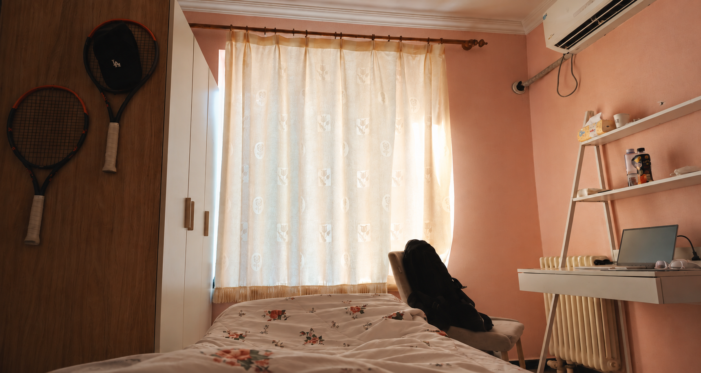

ROOM 01
按居住顺序整理
北漂 · 居住记录
02 待录入
03 待录入
请使用支持 WebGL 的浏览器，并开启硬件加速。
EXPLORE THE ROOM
拖动环顾四周
W A S D前后左右移动，也可用方向键
Shift / Ctrl按住上升 / 下降，可近看物件和低处细节
点击物品墙上开关、窗帘、花洒和水龙头可以直接操作
右上角声音默认静音；点击开启柜门、窗帘与水流音效
双击画面锁定鼠标环顾，Esc 退出
空间总览旋转、缩放，查看房间布局
手机：可竖屏或横屏浏览；左下方向键移动，右下竖排按键上升／下降，滑动画面环顾。沉浸看房时仍保留移动键。视点约 2 毫米，可从家具上方、下方和间隙穿行；实体表面会阻挡移动。